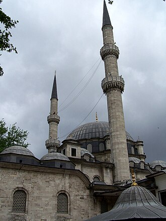

Giới thiệu
La mosquée Eyüp Sultan est un sanctuaire islamique de la ville d'Istanbul, en Turquie. Elle doit son nom à l'un des compagnons de Mahomet, Abu Ayyub al-Ansari - appelé par les turcs Eyüp Sultan - tombé lors du premier siège de Constantinople.
مسجد أيوب سلطان مسجد عثماني قديم موجود في منطقة أيوب في الجانب الأوروبي من مدينة إسطنبول، بالقرب من منطقة القرن الذهبي، ويقع خارج أسوار القسطنطينية، إذ بني المسجد عام 1458، أي بعد خمس سنوات من فتح القسطنطينية، وهو أول مسجد بناه المسلمون في إسطنبول بعد فتح القسطنطينية عام 1453.
The Eyüp Sultan Mosque is a mosque in Eyüp district of Istanbul, Turkey. The mosque complex includes a mausoleum marking the spot where Ebu Eyüp el-Ansari, the standard-bearer and companion of the prophet Muhammad, is said to have been buried. On a much older site, the present building dates from the beginning of the 19th century.
Eyüp Sultan Camii, İstanbul'un Konstantinopolis Surları dışındaki, Haliç kıyısında yer alan ilçesi Eyüpsultan'daki bir camidir. Külliyede, İslam peygamberi Muhammed'in sancaktarı ve sahabesi Ebu Eyyûb el-Ensarî'nin gömüldüğü türbe de yer almaktadır. Çok daha eski bir alanda bulunan mevcut yapı 19. yüzyılın başlarından kalmadır.
Masjid Eyüp Sultan adalah sebuah kompleks masjid peninggalan Kesultanan Utsmaniyah yang berada di distrik Eyüp, Provinsi Istanbul, Turki atau lebih tepatnya di luar tembok kota atau dekat Tanduk Emas. Awalnya bangunan ini berasal dari situs masjid yang jauh lebih tua, yang kemungkinan didirikan pada tahun 1458. Kemudian di kompleks masjid ini juga terdapat mausoleum tempat wafatnya Abu Ayyub al-Anshari.
ایوب سلطان مسجد ترکی کے شہر استنبول میں واقع ایک مسجد ہے جو شاخ زریں کے قریب قدیم شہر قسطنطنیہ کی فصیلوں کے باہر واقع ہے۔ یہ جگہ استنبول شہر کے یورپی حصے کے موجودہ ضلع ایوب میں ہے۔ یہ مسجد 1453ء میں عثمانیوں کے ہاتھوں قسطنطنیہ کی فتح کے بعد 1458ء میں تعمیر کی گئی۔ یہ مسجد عین اس جگہ تعمیر کی گئی جہاں صحابئ رسول حضرت محمد صلی اللہ علیہ و آلہ وسلم حضرت ابو ایوب انصاری رَضی اللہُ تعالیٰ عنہُ 670ء میں محاصرۂ قسطنطنیہ کے دوران شہید ہو گئے تھے۔ ان کا مزار ترکوں کے لیے انتہائی مقدس و پُر عقیدت مقام ہے۔
Die Eyüp-Sultan-Moschee befindet sich im Istanbuler Stadtteil Eyüp am nördlichen Ende des Goldenen Horns.
La Mezquita de Eyüp Sultan está situada cerca del Cuerno de Oro, en el distrito de Eyüp, en la parte europea de Estambul. Se encuentra fuera de las Murallas de Constantinopla. Construida en 1458, fue la primera mezquita construida por los turcos otomanos tras la conquista de Constantinopla en 1453.
La moschea di Eyüp Sultan è una moschea imperiale ottomana situata nel distretto di Eyüp a Istanbul, fuori dalle mura di Costantinopoli, nei pressi del Corno d'Oro. La struttura attuale risale agli inizi del XIX secolo.
A Mesquita de Eyüp Sultan é uma mesquita otomana situada no distrito de Eyüp, Istambul, Turquia. Está situada na parte exterior das Muralhas de Constantinopla junto ao Corno de Ouro.
De Eyüp Sultan-moskee is een moskee in het (gelijknamige) district Eyüp in de Turkse stad Istanboel. De moskee is gebouwd bij het mausoleum van Abu Ayyub al-Ansari, metgezel van de profeet Mohammed en vaandeldrager in diens leger. Daarom is de moskee, hoewel zeker niet de grootste, voor sommige moslims wel de meest heilige plek in Istanbul. Het mausoleum trekt jaarlijks vele pelgrims.
埃于普蘇丹清真寺 位于伊斯坦布尔欧洲一侧的埃于普苏丹区，靠近金角湾，君士坦丁堡城墙外。建于1458年，是鄂圖曼土耳其人于1453年征服君士坦丁堡后最早兴建的清真寺之一。
Мечеть Эйюпа Султана расположена в районе Эюп на европейской стороне Стамбула, недалеко от Золотого Рога, за стенами Константинополя.
Trên bản đồ
Tài liệu và đường dẫn
- Wikipédia — Français
- Wikipédia — العربية
- Wikipédia — English
- Wikipédia — Türkçe
- Wikipédia — Bahasa Indonesia
- Wikipédia — اردو
- Wikipédia — Deutsch
- Wikipédia — Español
- Wikipédia — Italiano
- Wikipédia — Português
- Wikipédia — Nederlands
- Wikipédia — 中文
- Wikipédia — Русский
- Wikidata — Q956677
Dữ liệu: Wikidata (CC0), cập nhật 3 tháng một lần. Năm là niên đại xây dựng sớm nhất được biết của công trình: với một công trình về sau mới trở thành thánh đường (như Hagia Sophia), đó là năm của công trình ban đầu. Ảnh: Wikimedia Commons, tác giả và giấy phép ở trang của từng ảnh.